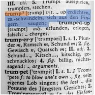

Aufgabe 3: Dictionaries¶
Theorie¶
In den letzten Übungen haben wir einen Fokus auf Listen gelegt. Nun wollen wir ein besonderen Fokus auf den Datentyp Dictionary legen.
Ähnlich wie eine List, ist eine Dictionary ein Behälter wo mehrere Elemente abgespeichert werden können. Wie bei einem Wörterbuch bekommt jedes Element ein „Schlüsselwort“, mit dem man den Eintrag finden kann. Unter dem Eintrag „trump“ findet man im Langenscheidt Wörterbuch (1977) die Erklärung „erdichten, schwindeln, sich aus den Fingern saugen“.

In Python würde man diese Dictionary folgendermassen erstellen:
langenscheidt = {"trump":"erdichten- schwindeln- sich aus den Fingern saugen"}
Schlüssel (von nun an mit Key bezeichnet) des Eintrages lautet „trump“ und der dazugehörige Wert (Value) „erdichten- schwindeln- aus den Fingern saugen“. Beachte die geschweiften Klammern ({ und }) bei der Erstellung einer Dictionary.
Eine Dictionary besteht aber meistens nicht aus einem, sondern aus mehreren Einträgen: Diese werden Kommagetrennt aufgeführt.
langenscheidt = {"trump":"erdichten- schwindeln- sich aus den Fingern saugen", "trumpery":"Plunder- Ramsch- Schund"}
Der Clou der Dictionary ist, dass man nun einen Eintrag mittels dem Key aufrufen kann. Wenn wir also nun wissen wollen was „trump“ heisst, ermitteln wir dies mit der nachstehenden Codezeile:
langenscheidt["trump"]
'erdichten- schwindeln- sich aus den Fingern saugen'
Um eine Dictionary mit einem weiteren Eintrag zu ergänzen, geht man sehr ähnlich vor wie beim Abrufen von Einträgen.
langenscheidt["trumpet"] = "trompete"
Ein Key kann auch mehrere Einträge enthalten. An unserem Langenscheidts Beispiel: Das Wort „trump“ ist zwar eindeutig, doch „trumpery“ hat vier verschiedene Bedeutungen. In so einem Fall können wir einem Eintrag auch eine List von Werten zuweisen. Beachte die Eckigen Klammern und die Kommas, welche die Listeneinträge voneinander trennt.
langenscheidt["trumpery"] = ["Plunder- Ramsch- Schund",
"Gewäsch- Quatsch",
"Schund- Kitsch",
"billig- nichtssagend"]
langenscheidt["trumpery"]
['Plunder- Ramsch- Schund',
'Gewäsch- Quatsch',
'Schund- Kitsch',
'billig- nichtssagend']
len(langenscheidt["trumpery"])
4
Übungen¶
Übung 3.1¶
Erstelle eine Dictionary mit folgenden Einträgen: Vorname und Nachname von (d)einer Person. Weise diese Dictionary der Variable me zu.
# Musterlösung
me = {"vorname": "Guido", "nachname": "van Rossum"}
Übung 3.2¶
Rufe verschiedene Elemente aus der Dictionary via dem Key ab.
# Musterlösung
me["nachname"]
'van Rossum'
Übung 3.3¶
Nutze me um nachstehenden Satz (mit deinen Values) zu erstellen:
# Musterlösung
"Mein name ist "+me["nachname"] +", "+ me["vorname"]+" "+me["nachname"]
'Mein name ist van Rossum, Guido van Rossum'
'Mein name ist van Rossum, Guido van Rossum'
Übung 3.4¶
Ergänze die Dictionary me durch einen Eintrag „groesse“ mit (d)einer Grösse.
# Musterlösung
me["groesse"] = 181
Übung 3.5¶
Erstelle eine neue Dictionary people mit den Keys „vornamen“, „nachnamen“ und „groesse“ und jeweils 3 Einträgen pro Key.
# Musterlösung
people = {"vornamen": ["Christopher", "Henning", "Severin"], "nachnamen": ["Annen","May", "Kantereit"], "groessen": [174, 182, 162]}
Übung 3.6¶
Rufe den ersten Vornamen deiner Dict auf. Dazu musst du dein Wissen über Listen und Dictionaries kombinieren.
# Musterlösung
people["vornamen"][0]
'Christopher'
Übung 3.7¶
Rufe den dritten Nachname deiner Dict auf.
# Musterlösung
people["nachnamen"][2]
'Kantereit'
Übung 3.8¶
Berechne den Mittelwert aller grössen in deiner Dict
# Musterlösung
sum(people["groessen"])/len(people["groessen"])
172.66666666666666